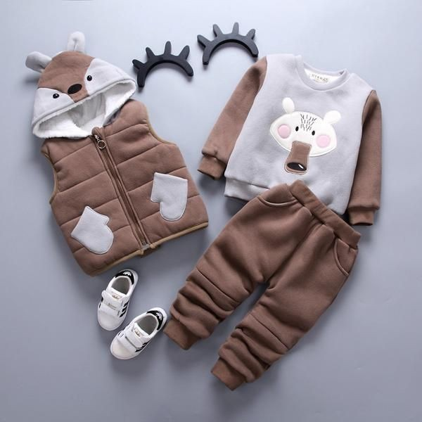
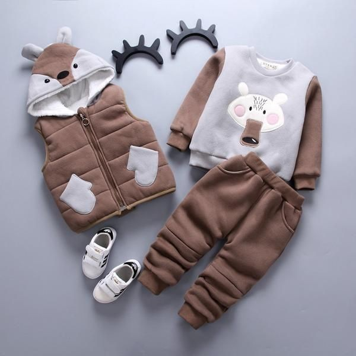

Baby clothes está particularmente al tanto de las necesidades de los niños, y ha creado una colección de ropa pensanda para los primeros meses de vida de tu bebé. Ropa de tejido suave, adecuado para pieles más delicadas y con un diseño cómodo e ideal para estar en el primer guardarropa. ¡Descubre la coleccón de Baby Clothes!

 
